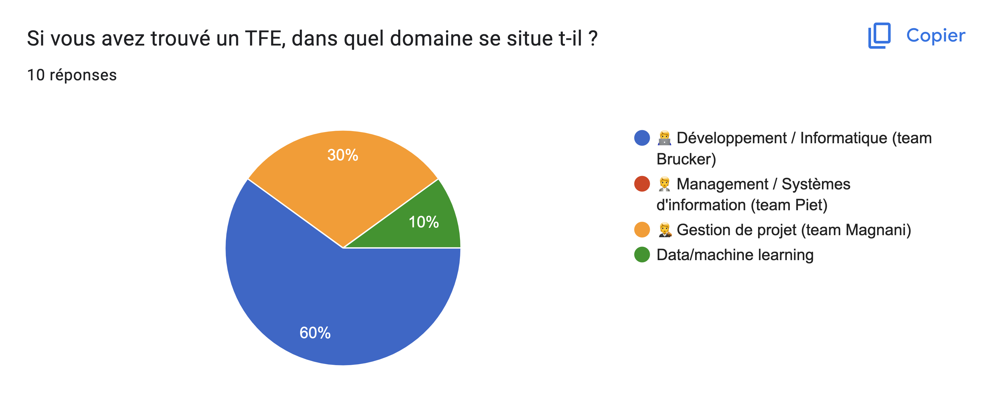
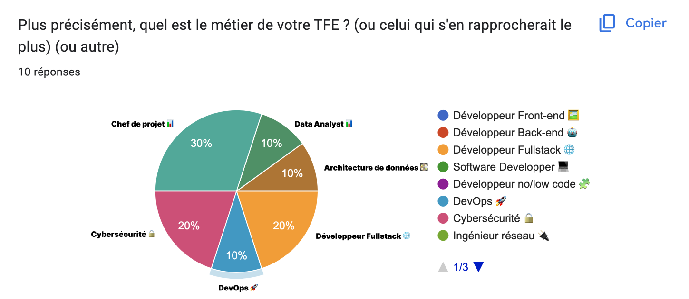
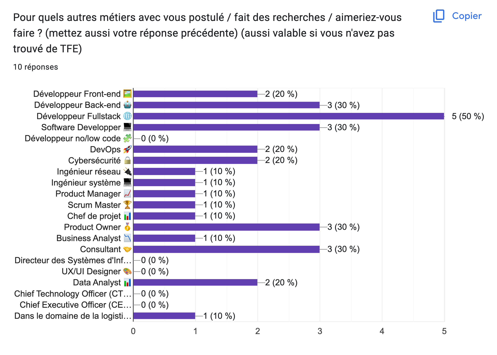

[MON] Les métiers après DO_IT
- MON
- 2022-2023
- temps 3
- Dev
- Killian ROYANT
Ce MON présente différents métiers dans le domaine du développement informatique. Il est destiné aux étudiants de DO_IT qui souhaitent se renseigner sur les métiers qui leur sont accessibles après la formation. L’objectif de ce MON sera, à terme, de donner aux étudiants un aperçu des métiers possibles en sortant du parcours. On pourra également constituer différents parcours métiers à partir des cours proposés dans l’année et des anciens MON.

Source : Plongez dans les coulisses des métiers du web en 2023 ! © BDM
Le parcours DO_IT de Centrale Marseille est une option de dernière année qui se concentre sur la gestion de projet, le développement informatique (majoritairement le développement web) et le management. Les étudiants qui suivent ce parcours ont la possibilité d'acquérir des compétences dans ces domaines et de se préparer à une carrière dans divers métiers. Voici une liste de certains des métiers qui sont faisables en sortant du parcours DO_IT, organisée par domaines.
Sondage auprès des étudiants de DO-IT
Afin de faire l’inventaire des perspectives des élèves sortant de DO-IT, j’ai réalisé un sondage auprès des étudiants pour en savoir plus sur leurs TFE et leurs recherches. Voici les résultats
Domaine

Contenu du TFE

Contenu des recherches

À partir de ces résultats, j’ai pu déterminer des postes d’intérêts pour les élèves sortant de DO_IT. L’objectif de ce MON sera, à terme, de donner aux étudiants un aperçu des métiers possibles en sortant du parcours. On pourra également constituer différents parcours métiers à partir des cours proposés dans l’année et des anciens MON.
Sommaire
- Sondage auprès des étudiants de DO-IT
- Sommaire
- Développement Informatique
- Gestion de Projet
- Design
- Données
- Conclusion
Développement Informatique
Développeur Front-end 🖼️
- Le Développeur Front-end est responsable de la partie visible d'une application web.
- Il/elle conçoit et programme l'interface utilisateur, gère l'expérience utilisateur et crée l'aspect visuel.
- Les compétences requises pour ce poste sont la connaissance des langages de programmation web (HTML, CSS et JavaScript), la maîtrise des outils de design graphique (Photoshop, Sketch, Figma), la compréhension de l'expérience utilisateur (UX) et la communication efficace.
- Les technologies demandées pour ce poste sont les frameworks comme React, Angular et Vue.js.
Développeur Back-end 🤖
- Le Développeur Back-end est responsable de la partie invisible d'une application web.
- Il/elle gère la base de données, crée la logique de l'application et gère les serveurs.
- Les compétences requises pour ce poste sont la connaissance des langages de programmation web (Python, Ruby, Java, etc.), la compréhension de l'architecture web, la résolution de problèmes et la communication efficace.
- Les technologies demandées pour ce poste sont les frameworks comme Django, Ruby on Rails, Spring Boot.
Développeur Fullstack 🌐
- Le Développeur Fullstack est responsable de la partie visible et invisible d'une application web.
- Il/elle gère la base de données, crée la logique de l'application, gère les serveurs et conçoit et programme l'interface utilisateur.
- Les compétences requises pour ce poste sont la connaissance des langages de programmation web (HTML, CSS, JavaScript, etc.), la compréhension de l'architecture web, la maîtrise des outils de design graphique (Photoshop, Sketch, Figma), la compréhension de l'expérience utilisateur (UX), la résolution de problèmes et la communication efficace.
- Les technologies demandées pour ce poste sont les frameworks comme React, Angular et Vue.js côté front-end et Django, Ruby on Rails, Spring Boot côté back-end.
Software Developper 💻
- Le Software Developper est responsable de la création de logiciels pour les entreprises.
- Il/elle crée des programmes, des applications et des systèmes d'exploitation.
- Les compétences requises pour ce poste sont la connaissance des langages de programmation (Java, Python, C++, etc.), la compréhension de l'architecture logicielle, la résolution de problèmes et la communication efficace.
- Les technologies demandées pour ce poste dépendent des langages de programmation utilisés.
DevOps 🚀
- Le DevOps est responsable de la communication et de la collaboration entre les équipes de développement et d'exploitation pour améliorer l'efficacité et la qualité des logiciels.
- Il/elle coordonne les équipes de développement et d'exploitation, met en place et gère l'infrastructure et résout les problèmes.
- Les compétences requises pour ce poste sont la connaissance des outils de développement et d'exploitation (Docker, Kubernetes, Jenkins, etc.), la résolution de problèmes et la communication efficace.
Cybersécurité 🔒
- La Cybersécurité est un domaine en pleine croissance qui est responsable de la protection des systèmes informatiques contre les menaces et les attaques.
- Les professionnels de la cybersécurité surveillent les systèmes, détectent les menaces, répondent aux incidents et gèrent les vulnérabilités.
- Les compétences requises pour ce poste sont la connaissance des outils de sécurité (Firewalls, IDS/IPS, Antivirus, etc.), la résolution de problèmes et la communication efficace.
Architecte de données 📊
- L'Architecte de données est responsable de la conception, de la gestion et de la sécurité des données d'une entreprise.
- Il/elle crée des plans de données, gère les bases de données et surveille les performances des données.
- Les compétences requises pour ce poste sont la connaissance des technologies de données (SQL, NoSQL, etc.), la résolution de problèmes et la communication efficace.
Ingénieur réseau 🔌
- L'Ingénieur réseau est responsable de la conception, de l'installation et de la maintenance des réseaux informatiques d'une entreprise.
- Il/elle crée des plans de réseau, installe et configure les équipements de réseau et surveille les performances du réseau.
- Les compétences requises pour ce poste sont la connaissance des technologies de réseau (TCP/IP, DNS, VLAN, etc.), la résolution de problèmes et la communication efficace.
Ingénieur système 💻
- L'Ingénieur système est responsable de la conception, de l'installation et de la maintenance des systèmes informatiques d'une entreprise.
- Il/elle crée des plans de système, installe et configure les équipements de système et surveille les performances du système.
- Les compétences requises pour ce poste sont la connaissance des technologies de système (Windows, Linux, Unix, etc.), la résolution de problèmes et la communication efficace.
Gestion de Projet
Product Manager 📈
- Le Product Manager est responsable de la définition de la vision d'un produit et de sa gestion tout au long de son cycle de vie.
- Il/elle définit la stratégie de produit, gère le développement du produit et communique avec les parties prenantes.
- Il/elle travaille en étroite collaboration avec les équipes de développement et d'autres parties prenantes pour s'assurer que le produit est livré dans les délais impartis et répond aux besoins des clients.
- Les logiciels utiles pour ce poste sont Jira, Trello et Pivotal Tracker.
Scrum Master 🏆
- Le Scrum Master est responsable de la gestion d'une équipe de développement qui suit la méthodologie Agile.
- Il/elle planifie les sprints, coordonne les équipes, résout les obstacles et communique avec les parties prenantes.
- Il/elle travaille en étroite collaboration avec les autres membres de l'équipe pour s'assurer que les projets sont livrés dans les délais impartis et répondent aux besoins des clients.
- Les logiciels utiles pour ce poste sont Jira, Trello et Pivotal Tracker.
Chef de projet 📊
- Le Chef de projet est responsable de la gestion de projet, y compris la planification, la coordination et le suivi de l'avancement du projet.
- Il/elle planifie le projet, coordonne les équipes, gère les risques et communique avec les parties prenantes.
- Il/elle travaille en étroite collaboration avec les équipes de développement et d'autres parties prenantes pour s'assurer que le projet est livré dans les délais impartis et répond aux besoins des clients.
- Les logiciels utiles pour ce poste sont Jira, Trello et Pivotal Tracker.
Product Owner 🥇
- Le Product Owner est responsable de la définition et de la priorisation des fonctionnalités d'un produit.
- Il/elle définit la vision du produit, gère le backlog produit et communique avec les parties prenantes.
- Il/elle travaille en étroite collaboration avec les équipes de développement et d'autres parties prenantes pour s'assurer que le produit est livré dans les délais impartis et répond aux besoins des clients.
- Les logiciels utiles pour ce poste sont Jira, Trello et Pivotal Tracker.
Business Analyst 📉
- Le Business Analyst est responsable de l'analyse des processus commerciaux pour aider à prendre des décisions commerciales.
- Il/elle identifie les problèmes commerciaux, recommande des solutions et communique avec les parties prenantes.
- Il/elle travaille en étroite collaboration avec les équipes de développement et d'autres parties prenantes pour s'assurer que les projets répondent aux besoins des clients.
- Les logiciels utiles pour ce poste sont Excel, Tableau et Power BI.
Consultant 🤝
- Le Consultant est responsable de fournir des conseils à une entreprise ou à une organisation pour les aider à résoudre des problèmes ou à améliorer leurs performances.
- Il/elle comprend les problèmes de l'entreprise, recommande des solutions et communique avec les parties prenantes.
- Il/elle travaille en étroite collaboration avec les équipes de développement et d'autres parties prenantes pour s'assurer que les projets répondent aux besoins des clients.
- Les logiciels utiles pour ce poste sont Excel, Tableau et Power BI.
Design
UX/UI Designer 🎨
- L'UX/UI Designer est responsable de la création de la structure et de l'apparence d'une application web afin d'optimiser l'expérience utilisateur.
- Il/elle crée des maquettes, conçoit l'interface utilisateur, définit la structure de l'application, etc.
- Il/elle travaille en étroite collaboration avec les équipes de développement et d'autres parties prenantes pour s'assurer que le produit est livré dans les délais impartis et répond aux besoins des clients.
- Les logiciels utiles pour ce poste sont Figma, Adobe XD, Sketch.
Données
Data Analyst 📊
- Le Data Analyst est responsable de l'analyse des données pour aider à prendre des décisions commerciales.
- Il/elle collecte et analyse des données, crée des rapports et des visualisations, présente les résultats, etc.
- Il/elle travaille en étroite collaboration avec les équipes de développement et d'autres parties prenantes pour s'assurer que les projets répondent aux besoins des clients.
- Les logiciels utiles pour ce poste sont Excel, Tableau et Power BI.
Conclusion
En résumé, les étudiants qui suivent le parcours DO_IT de Centrale Marseille peuvent acquérir des compétences dans plusieurs domaines liés à l'informatique et au management, ce qui leur ouvre la porte à de nombreuses options de carrière.